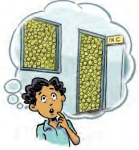
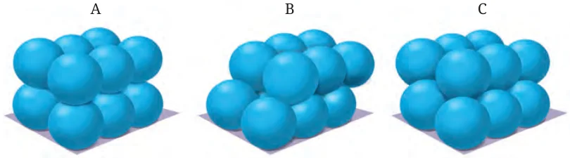

We learned about different 3D solids. Identify and list objects or structures around you that are cubical, cuboidal, cylindrical, conical, spherical, or pyramidal in shape, or closely resemble these shapes.
Activity: Find the approximate volumes of a gas cylinder, a bucket, any cylindrical vessel, a cupboard, a water tank that you can find near you (use \(1000\ \text{cm}^{3} = 1\) litre).
14.6.1 Guesstimates: Did You Ever Wonder?
Guesstimate questions are problems in which you make a reasonable estimate for a quantity when exact data are not available. Instead of finding a perfectly accurate answer, you use assumptions, approximations, logic, and everyday knowledge to model a given situation and arrive at a sensible estimate. Do you remember solving such questions in earlier grades?
Example 5: Lallan’s golgappa (a small hollow ball made of wheat) stall has a cylindrical vessel with pani (spiced water) in it. The vessel is of radius 10 cm and it has pani up to a height of 50 cm. Estimate the number of golgappas he can serve assuming all golgappas are spheres. Before calculating, make a guess.
Can you guess what number this could be — is it in the hundreds, thousands, or more?
The number of golgappas that can be served is
\(\dfrac{\text{Total } pani \text{ in the vessel}}{\text{Volume of } pani \text{ in each } golgappa}.\)
The amount of paani in the cylindrical vessel is given by \(V\) = area of base \(\times\) height.
\(V = \pi(10)(10) \times 50 = 5000\pi\ \text{cm}^{3}.\)
To estimate the number of golgappas, two students went about in different ways:
| Student 1’s calculation | Student 2’s calculation |
|---|---|
| Estimated radius of an average golgappa is 1.5 cm. | Estimated radius of an average golgappa is 1.75 cm. |
| Volume of a golgappa \(= \frac{4}{3} \times \pi(1.5)^{3}\) \(\approx 14.14\ \text{cm}^{3}\). (neglecting the thickness of the golgappa) | Volume of a golgappa \(= \frac{4}{3} \times \pi(1.75)^{3}\) \(\approx 22.43\ \text{cm}^{3}\). (neglecting the thickness of the golgappa) |
| Assuming each golgappa is filled with 60% pani on an average, the volume of pani in a golgappa \(= 14.14 \times 0.6 \approx 8.5\ \text{cm}^{3}\). | Assuming each golgappa is filled with 80% pani on an average, the volume of pani in a golgappa \(= 22.43 \times 0.8 \approx 18\ \text{cm}^{3}\). |
| The number of golgappas that can be served is \(= \dfrac{5000\pi}{8.5} \approx 1848\). | The number of golgappas that can be served is \(= \dfrac{5000\pi}{18} \approx 873\). |
| Lallan can serve about 1850 golgappas with the pani he has. | Lallan can serve about 870 golgappas with the pani he has. |
We see that the final answer depends upon the assumptions, estimations, and approximations done in the process.

Example 6: Anirban saw a few tennis balls lying around. He wondered, “How many tennis balls can fit in an empty classroom?”. The classroom is of dimensions 30 ft \(\times\) 30 ft \(\times\) 15 ft. Estimate how many tennis balls of radius 3 cm fit in this classroom. Before calculating, make a guess.
The volume of the tennis ball is \(\frac{4}{3} \times \pi \times 3^{3} \approx 113\ \text{cm}^{3}\).
The volume of the classroom is
\(30 \times 30 \times 15 = 13{,}500\ \text{ft}^{3} \approx 37{,}80{,}00{,}000\ \text{cm}^{3}.\)
Can we find the number of tennis balls that can fit in the classroom by dividing the volume of the classroom by the volume of a tennis ball?
\(\dfrac{37{,}80{,}00{,}000}{113} \approx 33{,}45{,}132.\)
No, the balls cannot fit in the room without leaving gaps in between. Hence this operation will only give an upper bound value, i.e., we can say for sure that we cannot fit more balls than this.
Accounting for these gaps can give a better estimate.

Using the first configuration: Along each side of the room, the number of balls that can be placed side-by-side along the length is \(\dfrac{\text{dimension of the room}}{\text{diameter of the ball}} \approx \dfrac{900}{6} = 150\). The same number can be placed along the width. Along the height, it is 75 balls.
Therefore, \(150 \times 150 \times 75 = 16{,}87{,}500\) denotes the approximate number of balls that can fill the room.
Using the other configurations, we might be able to fit more balls because of higher packing efficiency.
Make an estimate based on the second and third configurations.
Note: This is why spheres are not used as basic units to measure volumes as they leave gaps unlike cubes.